Hi, I'm
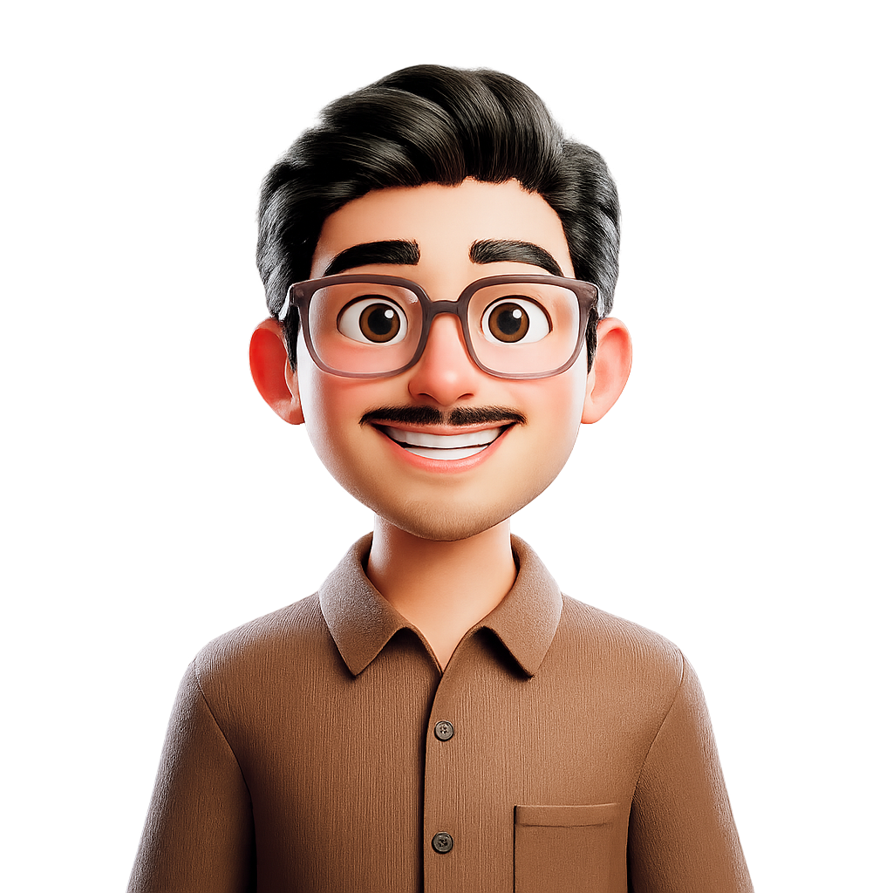
I’ve just completed my B.Tech in Computer Science (AI), finishing my end-semester exams. Over time, I’ve explored everything from backend systems to AI-driven projects, always focusing on making things efficient and meaningful. I also had the chance to intern in the CCOSW of the Army, where I got exposure to real-world systems and workflows. I enjoy learning by building and constantly improving along the way.
Know more about me ↗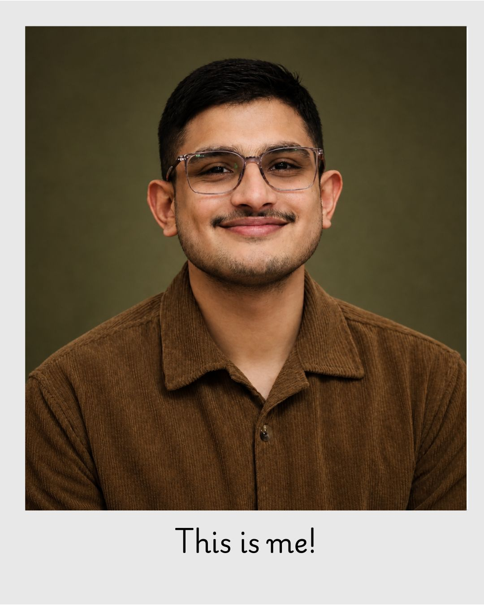
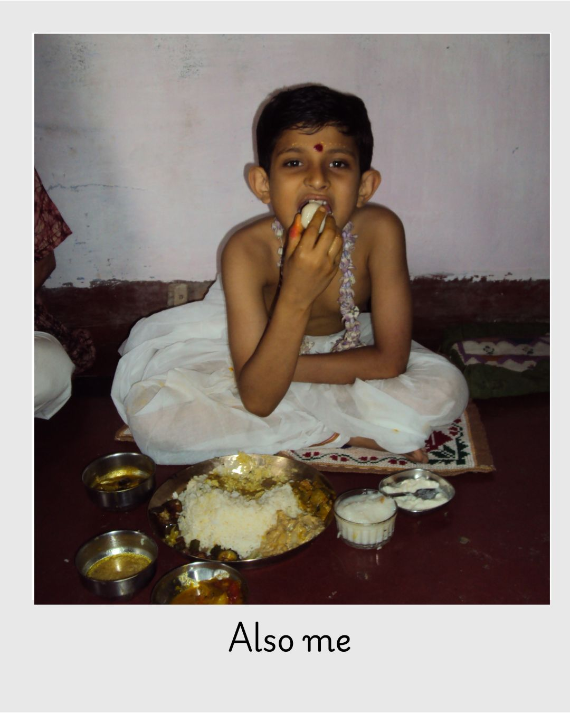
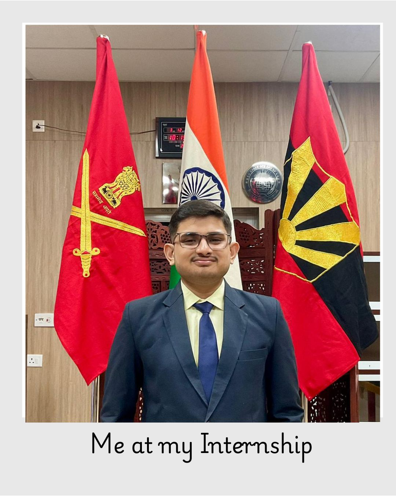
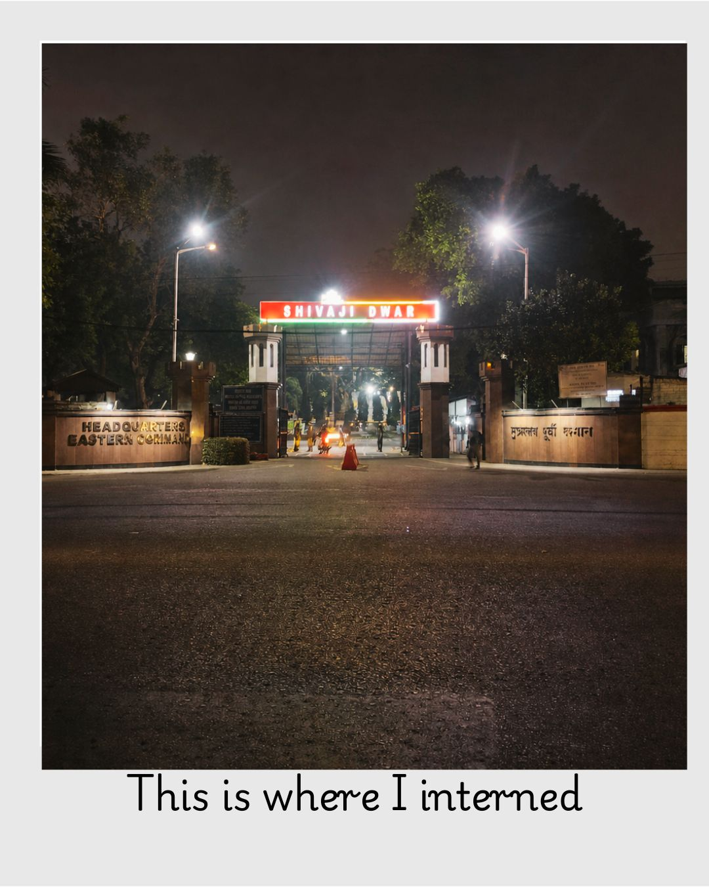
I have worked on developing a combination of systems -large backend-driven and small interactive systems. There are projects that are scaled and operate in real-time, and there are projects that investigate AI and data-driven concepts. I like working on both the stack, and exploring new technologies and designs. As time has passed, I have graduated to more complex implementations, to more production-like systems. Each of the projects has been associated with learning something new and making things a bit more efficient than they were previously.
View more projects ↗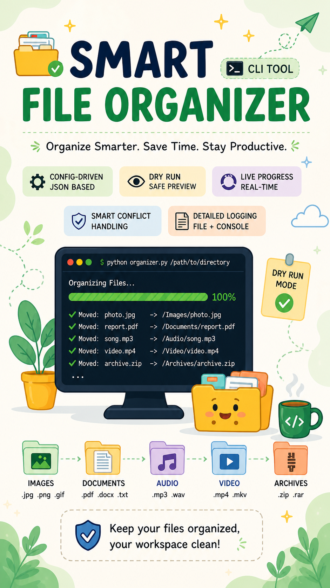
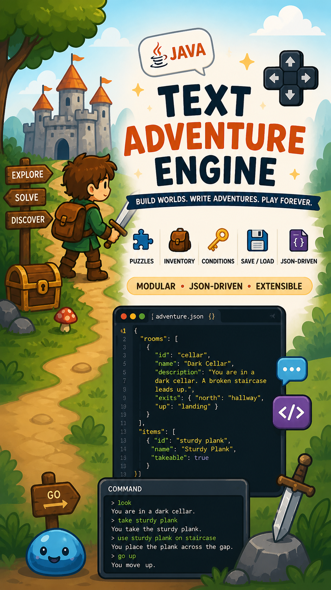
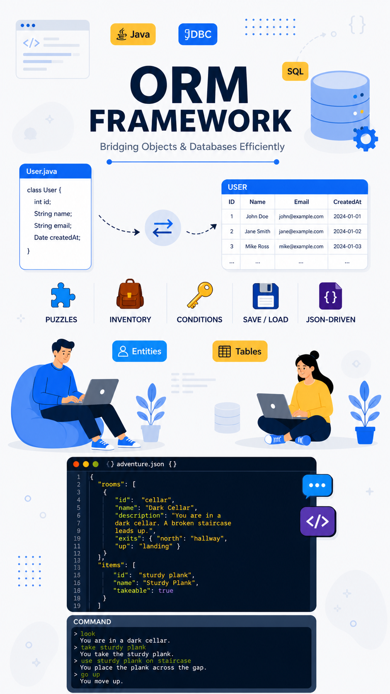
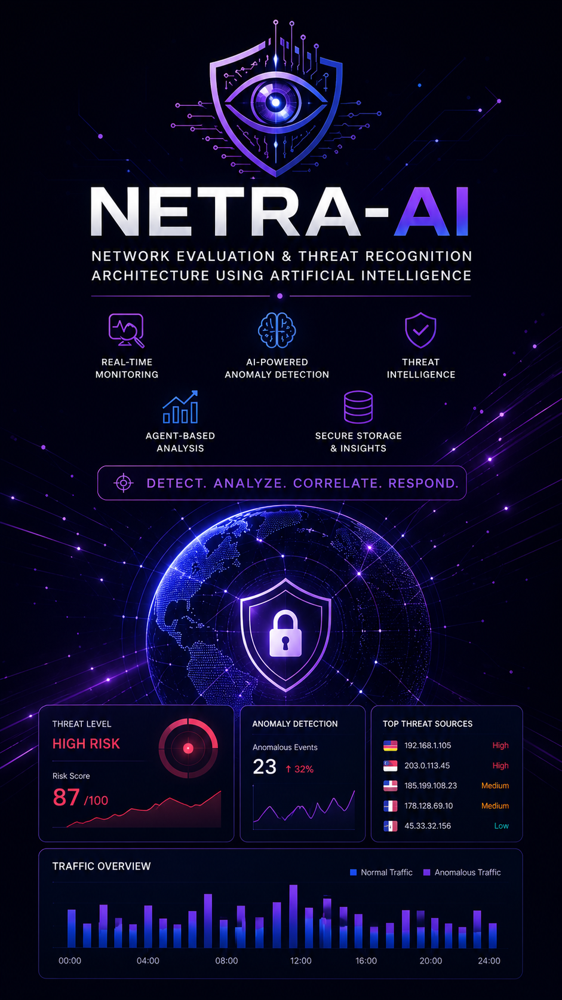
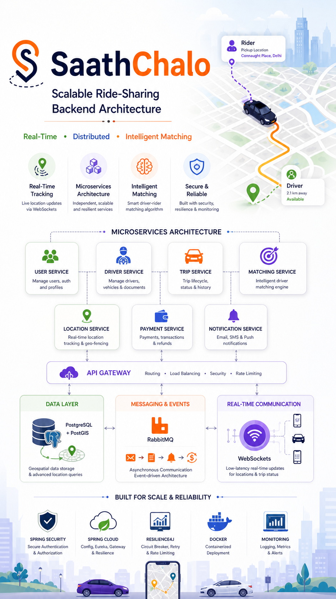
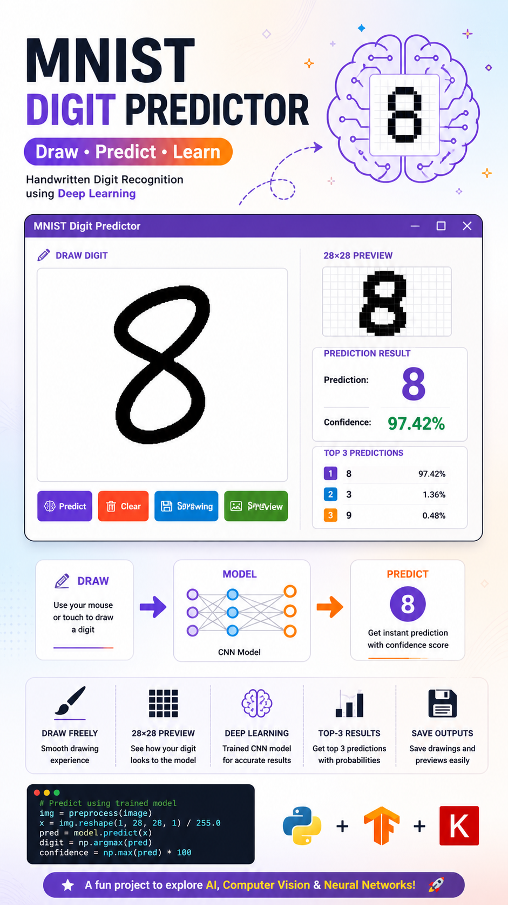
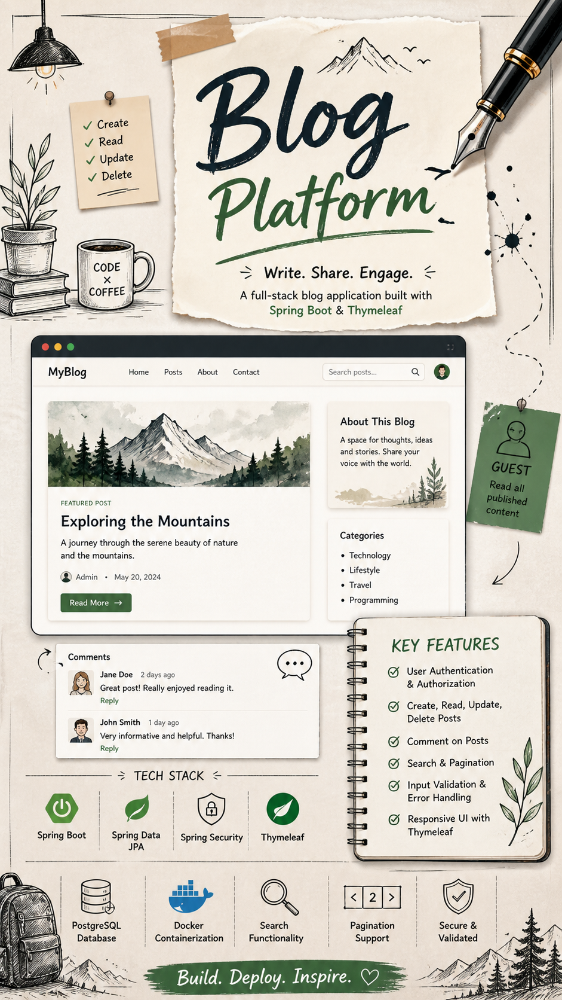
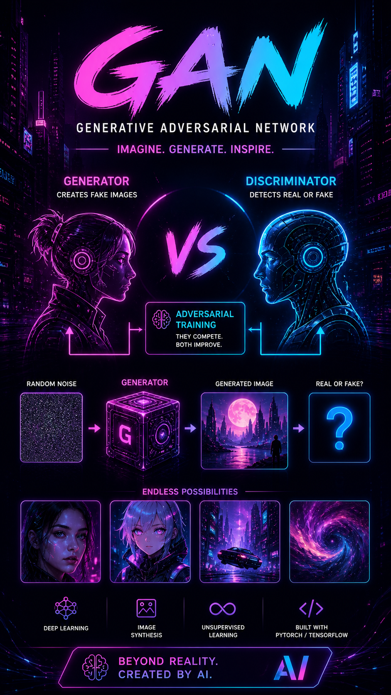
I am thankful to have been given a chance to be an intern Software Developer with the Indian Army where I was able to make significant contributions to real world systems. I developed automation solutions during this period to aid in streamlining workflow and mitigating manual labor, as well as the systems aimed at analyzing information related to security. I was able to work on the development of data-driven tools to monitor and report, and enhance documentation processes. All in all, it was an interesting experience that provided me with a practical experience of creating reliable and structured solutions in a disciplined environment.
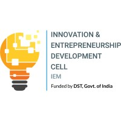
During my internship, worked on sentiment analysis, primarily on how to better classify short-form text such as tweets in real-world applications. I tested the combination of various methods, including lexical, statistical, and deep learning, and created a hybrid model, which outperformed regular baselines. In addition to that, I also created a little live app that would have a feedback loop to improve predictions as time goes by. Generally, it was a practical experience of transforming a research idea to a workable, practical system.